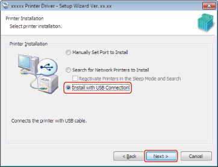
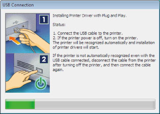

Follow this procedure to connect the device and computer with a USB connection and install the driver.
|
IMPORTANT
|
|
Be sure to log on as a member of Administrators when you start the computer.
In a USB environment, you cannot get device information or use the Department ID Management feature.
If you want to use a USB connection to connect the device you are using, you may require an optional USB interface board, depending on the printer model.
Depending on the printer model you are using, the PDL Selection (PnP) function of the device must be set beforehand. For details, refer to the manuals provided with your device.
|
1.
Turn off the device.
2.
Start the Installer → follow the instructions in the dialog boxes.
For details, see steps 1 to 3 of "
Network Connection."
3.
Select [Install with USB Connection] → click [Next].

4.
If the message "Installation cannot be stopped once it starts. Do you want to continue?" is displayed, click [Yes].
5.
When the message box below appears, connect the device and computer with a USB cable → turn on the device.

|
IMPORTANT
|
|
If installation fails in this screen, try performing the following procedure.
|
6.
Click [Exit] (or [Restart]).
The installed device(s) are displayed in [Devices and Printers] (or [Printers and Faxes] or [Printers]) in the Windows Control Panel.
The driver is now installed.
If the Device Is Not Recognized When Connected by USB
If the device is not recognized when connected by USB, try performing the following procedure.
1.
Connect the printer and computer with a USB cable, then turn the printer on.
2.
Display the Device Manager.
Windows Vista: Select [Control Panel] - [System and Maintenance] - [Device Manager]
Windows 7/8/8.1: Select [Control Panel] - [Hardware and Sound] - [Device Manager]
Windows Server 2012/Server 2012 R2: [Control Panel] - [Hardware] - [Device Manager].
3.
In [Other Devices], right-click the name of the printer you are using → execute [Delete].
The printer name becomes
"Canon + <model name>"
When the above procedure is finished, reinstall the driver.